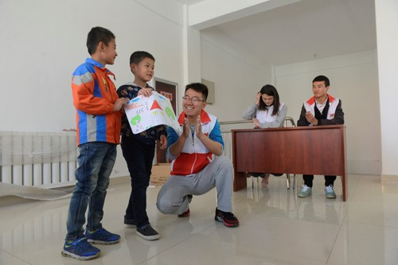

杨小明
桂电志愿者网 日期：2017-10-19 来源：中国志愿服务网

杨小明，男，1991年1月生，中共党员。2015年，成为了一名西部计划志愿者,现任宁夏微光义工志愿者服务总队总队长等职务。
1991年出生在国家级贫困县—泾源县的一个农民家庭，母亲为聋哑一级残疾，父亲因意外摔伤，落下腿脚不便的病根。年幼的他跟着爷爷奶奶生活，贫困的生活让他明白了帮助别人也会快乐自己。2008年5月12日，汶川大地震震动全国，萌发了做志愿者的想法。他在校园和社会中奔走呼吁，倡导更多的人为灾区捐款捐物;在学校组织集体募捐之后，又组织了第二次捐款，并和当地政府在镇上一起组织捐款。2011年9月，考入宁夏大学政法学院。进入大学后，立即着手创立了微光爱心小分队，后改名为微光义工志愿者服务总队。2011年，发起了“助老扶老”活动，长期帮扶城市乞讨、拾荒老人200余人次。2012年，发起了“一对一助学”活动，共家访困难家庭二百余户，实现“一对一助学”一百人。2012年11月，组织了“大手拉小手 微爱伴你走”志愿支教服务活动，与外来务工子女集中的28所小学建立了长期的志愿服务关系，共开展活动300余次，累计服务学生数万人。同时，针对大批外来务工家庭的子女周末“无人陪无人管”情况，又发起了“租住区一对一义务”辅导活动，已有24个固定支教点，长期帮扶学生千余人。2013年3月，发起“再续剩余的温暖”爱心活动，与区内十几个老年公寓和十几个社区进行长期的服务。2012年底他偶然在网上发现了一条关于身患白血病的乡村教师的求助信息，第一时间联系了对方家属，然后面向发出倡议。先后倡议募捐善款数万元，在网上发布的各种信息阅读数量高达四百万次。此后专门开辟了“微爱万里行”活动。该活动主要针对身边特困群体、个人进行募捐倡议，截至目前，累计帮扶个人、群体二十余个，与各类组织一道募捐善款三十余万元，募集物资数万件。截止目前创建的微光在宁夏各个高校和市县成立分队二十一支，招募志愿者超过一万一千人，累计开展活动两千五百余次，参与志愿者人次超过七万五千人次，志愿服务时间超过十六万小时，累积帮扶人群超过十四万人次，为社会各界弱势人群募集善款八十余万余，物资不计其数。。
杨小明的个人事迹得到人民日报、新华社、光明日报、中青报、宁夏广播电视台、宁夏日报等百余家中央和地方主流媒体报道。大学毕业后，他毅然选择了西部计划，成为一名西部计划志愿者，目前在银川市志愿者协会志工部服务，专门负责协会的志愿服务工作。
【责任编辑：刘亚楠】